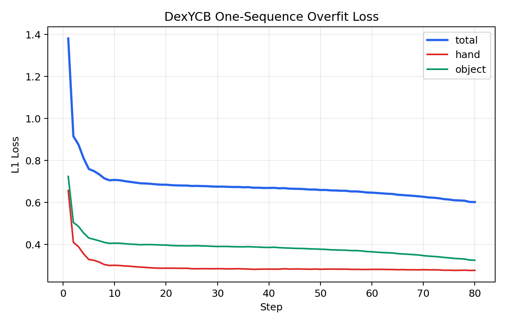
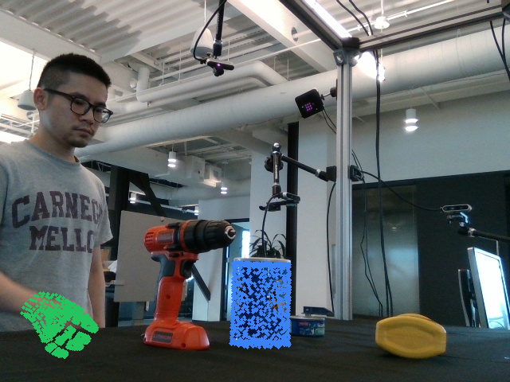
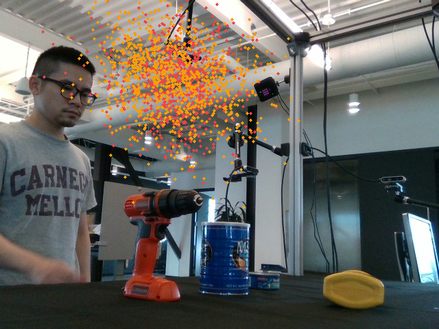
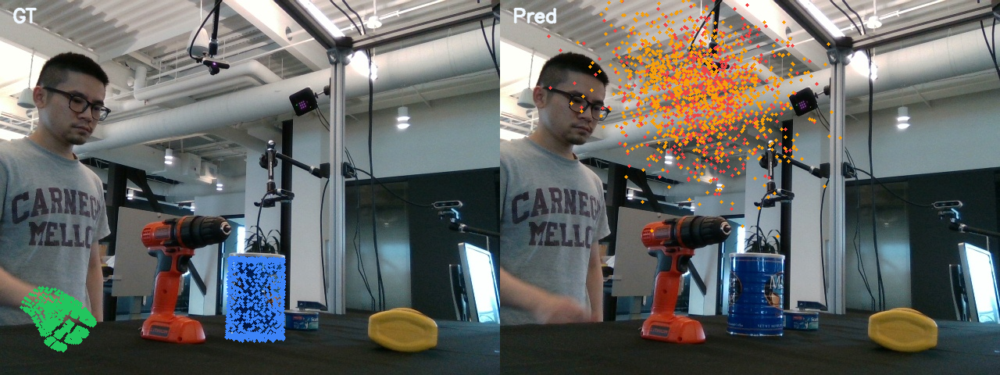

Loss Curve
The second real overfit still converges quickly, but now the signal comes from a frame with visible hand geometry rather than an empty-hand placeholder.
This rerun fixes the first-frame selection bug by skipping empty-hand placeholders and selecting
frame 000009 under sequence 20200709-subject-01/20200709_141754/836212060125.
The overfit now runs on a frame where both GT hand and GT object project into the image, and the
review pack explicitly separates GT, Pred, and side-by-side comparison overlays.

The second real overfit still converges quickly, but now the signal comes from a frame with visible hand geometry rather than an empty-hand placeholder.

Ground-truth hand and object points are both present in image space. This is the visual check that the selected frame is valid for HOI supervision.

Hand and object predictions are rendered alone. The object is closer, while the hand prediction still lifts into the upper scene volume.

Left panel is GT, right panel is Pred. This directly answers the review request to compare hand/object image overlays instead of only showing the prediction.
The frame resolver now prefers the first frame whose raw DexYCB label has non-empty hand pose and non-sentinel joint root, so sequence-level overfit no longer defaults to empty opening frames.
Hand and object still share the same TrellisSharedDecoder._decode() path. The only branch-specific difference remains the final output head for vertex count.